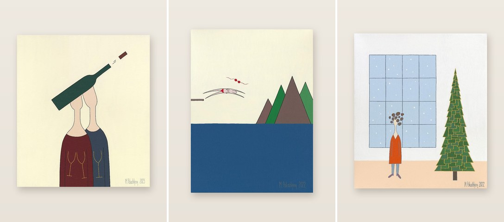

Как не заполнить ленту только собой
Мань, ты спросила, как найти баланс: чтобы всё залетало, но Instagram не состоял из одной тебя. Мы посмотрели, как это делают 23 художника, которые продают картины через Instagram (11 русскоязычных и 12 зарубежных), и проверили, как сейчас устроены обложки и сетка.3
Не меньше тебя, а ты всегда рядом с картиной
Убирать тебя не нужно: посты с тобой собирают около 50 лайков против 25-30 у одной картины, ролики с тобой - в 4-5 раз больше просмотров. Но «просто я» не нужно ни разу: в каждом кадре с тобой есть картина и рассказ о ней. А сетку профиля можно сделать галереей - обложками.
Что мы увиделиу других художников
- Нормы «сколько лица» нет. Её никто не измерял. Работают две модели: художник как личность или картина в центре, а голос автора - в подписях и сюжете. У тебя юмор уже внутри картин, и это редкое преимущество: такую работу пересылают друг другу как шутку.
- Лицо работает как событие, а не как дневник. У Маши Сомик (Москва, 10 тыс.) пост «кто я» с портретом - 468 лайков, пост «картина + цена» - 49. А у художницы, которая каждый день говорит в камеру, ролики при 21 тыс. подписчиков собирают по 10-20 лайков.
- Сильнее всего - история одной картины. У Анастасии Вострезовой (30 тыс.) ролик о том, как писался натюрморт с ковром, с её попугаем в кадре - 724 лайка, обычные ролики - около 200.
- Чередовать, как ты уже делаешь, - правильно. Анастасия Трусова (253 тыс.) строго чередует: готовая картина, ролик процесса, снова картина.
Три вариантаи какой советуем
Галерея снаружи, жизнь внутри
На всех обложках - чистая картина на одном фоне, внутри ролика с первой секунды живое: ты, руки, кисть.
- + профиль как у «аккуратных» художников, а живые ролики остаются
- - к каждому ролику нужна обложка
Каждая картина - маленький сериал
Не «картина, потом я», а несколько публикаций вокруг одной работы. Ты в кадре всегда вместе с ней.
- + ты не заполняешь ленту собой, ты рассказываешь про картину
- + одна картина даёт 3-4 публикации
- - новых картин за неделю в ленте меньше
Лента - картины, ты - в Stories
Как у самых крупных: в ленте только работы, ты - в Stories и изредка на событиях.
- + самый «чистый» вид
- - против твоих же цифр: новых людей приводят ролики с тобой. Крупным так можно, их уже знают
Сериал вокруг одной картиныты в кадре, но всегда про картину
Процесс
Руки, кисти, золотая нить, эскиз → холст, под трендовый звук. Текст поверх - с первой секунды. Как твои кисти (2 545 просмотров).
Сама картина
- картина целиком
- деталь крупно
- в интерьере или в руках, чтобы был виден размер
- откуда сюжет - в подписи
- в конце: «цена и примерка - ссылка в профиле»
Ты и эта картина
Держишь, вешаешь, рассказываешь, что имела в виду, или «pov» (1 797 просмотров). Это и есть твоё лицо в ленте, но всегда про картину.
Доступна
- репост своего поста
- «в наличии · размер · цена»
- ссылка на страницу картины (раздел 6 плана)
- опрос «Какую повесить в спальню: 1 или 2?»
Твой ритм, около четырёх публикаций в неделю, остаётся: три про одну картину, четвёртая - другая работа или событие (выставка, журнал, картина уехала к покупателю). Stories - между ними, 3-4 раза в неделю.
Сетка как галереяобложки-картины
Обложку ролика можно поставить свою, отдельно от видео. В ленте Reels люди видят не обложку, а сам ролик с первого кадра, поэтому на охват она почти не влияет и работает только на вид профиля. Значит, в сетке можно держать чистые картины, а внутри - живое.

- Первый кадр ролика - живой: ты, рука, кисть, текст. Если ролик начинается с той же неподвижной картины, что на обложке, его чаще пролистывают в первые три секунды.
- Текст на обложке не нужен: её видят только в профиле, а там лучше чистая картина.
- При публикации нажми на обложку и выбери картинку из галереи телефона, потом проверь вид в сетке профиля: картина должна быть целиком.
- Старые ролики можно переодеть: ⋯ → Изменить → обложка. Попробуй на одном.1
- Ролик, который не пошёл, можно убрать из сетки (⋯ → Управлять → Убрать из сетки профиля), во вкладке Reels он останется.2 А порядок постов в сетке теперь можно менять: долгое нажатие на пост.
- Твоё лицо в профиле не пропадёт: в закрепе остаётся биография с портретом (раздел 2 плана), а потом - карусель «Кто я и как купить».
Обложки к трём готовым роликам


На телефоне обложка откроется картинкой: Поделиться → Сохранить изображение. Сами ролики - на странице плана. Обложки к следующим роликам сделаю так же, из фото на сайте: напиши, к каким картинам.
Что не подтверждено
- Справка Instagram пишет, что обложку после публикации не сменить, но страница старая; обзоры 2025 года (Hootsuite, Later) пишут, что можно. Поэтому - сначала на одном ролике.
- По обзорам 2025-2026 годов. Вернуть ролик в сетку, по свежим источникам, тоже можно (Добавить в сетку профиля), но мы не проверяли.
- Число подписчиков и лайков - по открытым страницам Instagram на 24 ноября 2026 года. Сторис и обложки чужих роликов снаружи не видны, поэтому про них - по статьям и обзорам.
Как тебе такой баланс? Если что-то не так - пиши, поправим.
← К плану Instagram